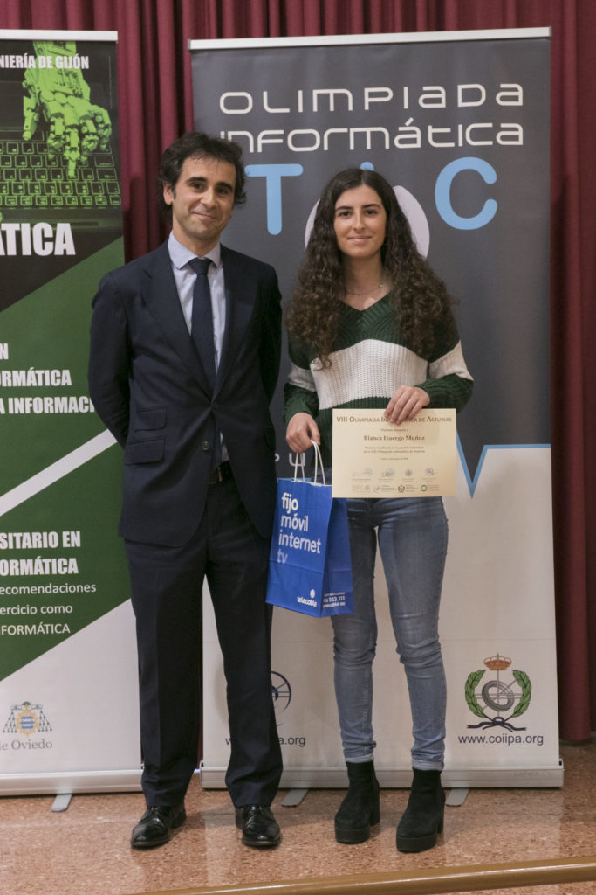
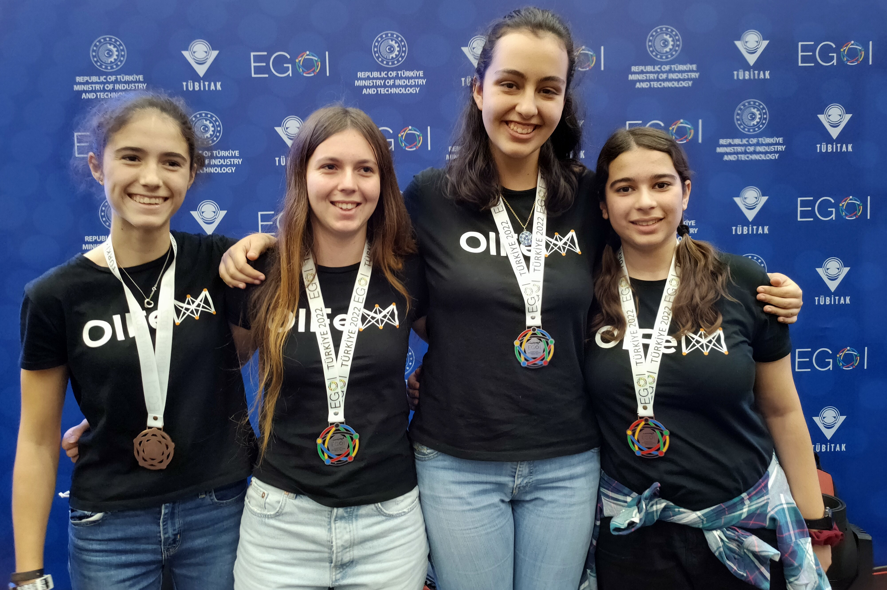
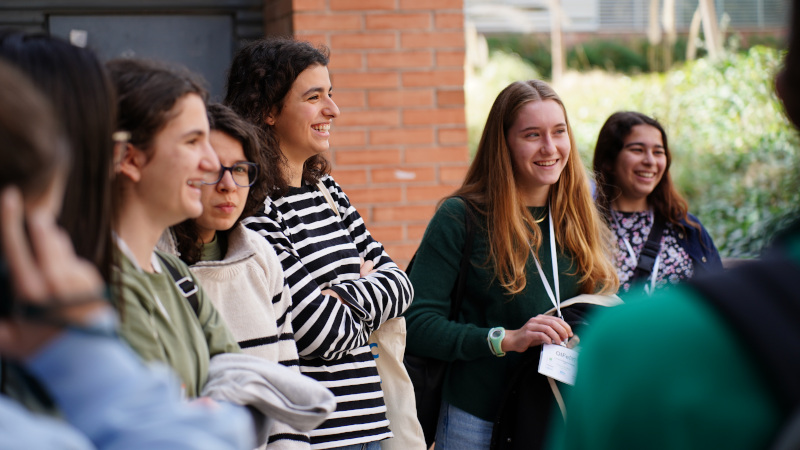

I am a research engineer at Google DeepMind, where I work on language models. I joined GDM in the Summer of 2023, after finishing an undergrad in Mathematics and Computer Science in the University of Oxford.
Here you can find a summary of the things I have done, which I'll hopefully keep up to date :)
These include co-founding and running a non-profit for four years, designing and preparing problems for several informatics olympiads, and work experience during high school in applied AI.
Prizes
-
Inspiring Girls "Stem Inspiration" Prize 2023
Issued by Inspiring Girls (NGO)
-
Prize to the Best Problem in a Regional Informatics Olympiad in the 2022/23 Season
Issued by the Spanish Informatics Olympiad
-
Santander-CIDOB 35 Under 35 List 2022
Issued by Banco Santander, CIDOB
-
St Hugh's College Scholarship (First-Class Preliminary Examinations)
Issued by St Hugh's College, University of Oxford
-
Google Generation Scholarship EMEA 2021-22
Issued by Google
-
María Cristina Masaveu Peterson Scholarship for Academic Excellence (full scholarship for the duration of my studies: 2020-23)
Issued the María Cristina Masaveu Peterson Foundation
-
Silver Medal, Iberoamerican Informatics Olympiad 2020
Issued by the Iberoamerican Informatics Olympiad (OII, previously CIIC)
-
Prize for the Highest-Rated Female Competitor in Spain, 2020
Issued by the Spanish Informatics Olympiad
-
Winner of the 2019 Divisadero Datathon (+ Prize for the Best Business Idea)
Issued by Merkle Spain / Divisadero
-
Prize for the Highest-Rated Female Competitor in Spain, 2019
Issued by the Spanish Informatics Olympiad
-
Prize for the Highest-Rated Python Competitor in Spain, 2019
Issued by the Spanish Informatics Olympiad
-
Winner of the 2019 Asturian Informatics Olympiad
Issued by the Asturian Informatics Olympiad
Gold Medal, Spanish Informatics Olympiad 2020 (Implied Classification to IOI 2020)
Issued by the Spanish Informatics Olympiad
-
Google DeepMind, 2023 - present
Research Engineer (L4), May 2024 - present
Research Engineer (L3), July 2023 - April 2024
-
OIFem, 2020-24
Co-founder, chairwoman
-
University of Oxford, 2020-23
BA in Mathematics and Computer Science
-
DeepMind, 2022
Research Engineering Intern
-
Empathy.co, 2020
Data Engineering Intern
-
Merkle Spain (Divisadero), 2019
Data Scientist

Gemini Diffusion
In contrast to autoregressive language models, which generate text by outputting one token at a time from left to right, text diffusion models iteratively refine a piece of text starting with noise until the final sample is produced. This opens up interesting possibilities like more natural editing or inpainting.
Gemini Diffusion was demoed at the Google I/O 2025 Keynote, shortly followed up with a very successful launch of a chat UI to interact with the model. I was a core contributor to this project, and I got to work on many aspects on the model, from diffusion research to infra work and post-training.
The model is on par with comparable autoregressive models on well-known benchmarks, while being 5 times faster.
OIFem
During my time in high school, when I competed regularly in informatics olympiads, I noticed a very large gender gap, where girls usually made up under 5% of participants. This motivated me to co-found the Spanish Informatics Olympiad for Girls (OIFem), a non-profit with the desire to help teenage girls in Spain find their path in computer science, and discover opportunities in the tech world. I ran this organisation, where I managed 30+ people, for the first four years of its existence. After this time, I stepped to the side to let a team of former students take charge. Our main activity (everything, including trips, was free for students) consisted of:
- Data structures and algorithms classes: we taught weekly classes throughout the school year in small groups, sending practice problem sets for students to train between sessions. There were classes of all levels, from introductions to programming to coaching for national and international informatics olympiads.
- Personalised attention: students would have one or more volunteers that they could contact outside of lessons to discuss problems they were stuck on, receive plans catered to them, and get coding advice.
- Yearly contest: we organised a national competition for all the students once a year where, after some online selection phases, the finalists would come to compete in person for four spots in the Spanish delegation for the European Girls' Informatics Olympiad (EGOI).
- Insight into the tech industry: our activities were sponsored by companies of the likes of Amazon and BBVA. This meant that students could regularly attend talks with their employees, and connect with them for future opportunities.



Despite how bad the situation was when we founded the non-profit, our students were very successful from the get-go. Some of their achievements include:
- The first victory of a women's team in HP Codewars Spain. The main programming competition for teams in Spain had never seen a single woman in its winning team, and our students won with an all-female team.
- More medals from girls from 2020 onwards (year where organisation was set up) in the (mixed) Spanish Informatics Olympiad than in all years until then (1997-2020). The same holds if you just look at gold medals.
- Medals every year representing Spain in prestigious mixed international competitions, like the Iberoamerican Informatics Olympiad (CIIC) and the Western European Olympiad in Informatics (WEOI).
- Frequent admissions to top universities.
- A spot representing Spain in IOI 2025 (yet to take place).
During this period, the work we were doing in the non-profit got a lot of visibility. I especially liked this article in El País highlighting our students' record-breaking performance in Turkey, and being on the front cover of Cinco Días, the main financial newspaper in Spain. Pedro Sánchez, President of Spain, also recognised me as an inspiration for the 2025 Digitalisation Plan.
Designing problems for informatics olympiads
I regularly participate in the preparation of problems for informatics olympiads, and really care about providing good learning opportunities for high school students. Some recent examples:
- Even though I no longer run OIFem, I still frequently design problems for their competitions.
- I have been a member of the Spanish Informatics Olympiad's Scientific Committee (the team in charge of preparing the contest) since 2020, being behind many of the problems since then.
- I helped set up the first Western European Olympiad in Informatics as part of its Scientific Committee, designing and preparing one of the four problems, and taking care of testing the rest.
High school
When I was 11, I discovered platforms like edX and Coursera. This was a game-changer for me. I started spending all my time learning about different areas of maths and their applications, and that's how I discovered programming. Since I was already working on university-level subjects, teachers in high school mostly let me be on my laptop and do my own thing. Instead of graduating early, I preferred to use the time to focus without pressure on the stuff I found interesting, a decision I don't regret at all.
Some courses in data structures and algorithms introduced me to competitive programming. Having only a couple months' worth of practice, I signed up to the 2019 Asturian Informatics Olympiad and won, earning a spot in that year's Spanish Informatics Olympiad final. I ended up being the top-rated Python programmer that season, but my overall score was not high enough to make the International Olympiad in Informatics (IOI) team. I still had a full year of high school left, and I spent most of it training with this objective. I won a gold medal that time around in the Spanish Informatics Olympiad and made the IOI team. This also allowed me to represent Spain in the Iberoamerican Informatics Olympiad (CIIC), where I got a silver medal.
In this time, I got very interested in AI research. I would regularly replicate the papers that I read and enjoyed playing with datasets I found online. As soon as I was old enough to work, I sent out my CV to Merkle Spain, a consultancy that had presented their projects in the olympiad that I had attended. I won the datathon they organised that year and landed a job there as a data scientist. I spent my time mostly between two projects: an analysis of consumer trajectories on insurance websites to cater the experience to their profile, and an efficient data pipeline using PySpark for a large telecom. I found the latter especially interesting because I got to work with graph data, which had a nice overlap with competitive programming.
For my final Summer before university, I wanted to try something different, and I did a data engineering internship in Empathy.co, a company that works on the search engines behind the websites of some of the largest retailers. Despite my job title, I ended up single-handedly developing an agent that predicted search trends and, focusing on queries with no results, recommended actions for retailers to take.
I was determined to study Mathematics and Computer Science in Oxford, so I prepared six International A-Levels on top of my Spanish subjects: Mathematics, Further Mathematics, Physics, Computer Science, Economics and Spanish. I got 6 A*'s and full marks in 7 of the papers.